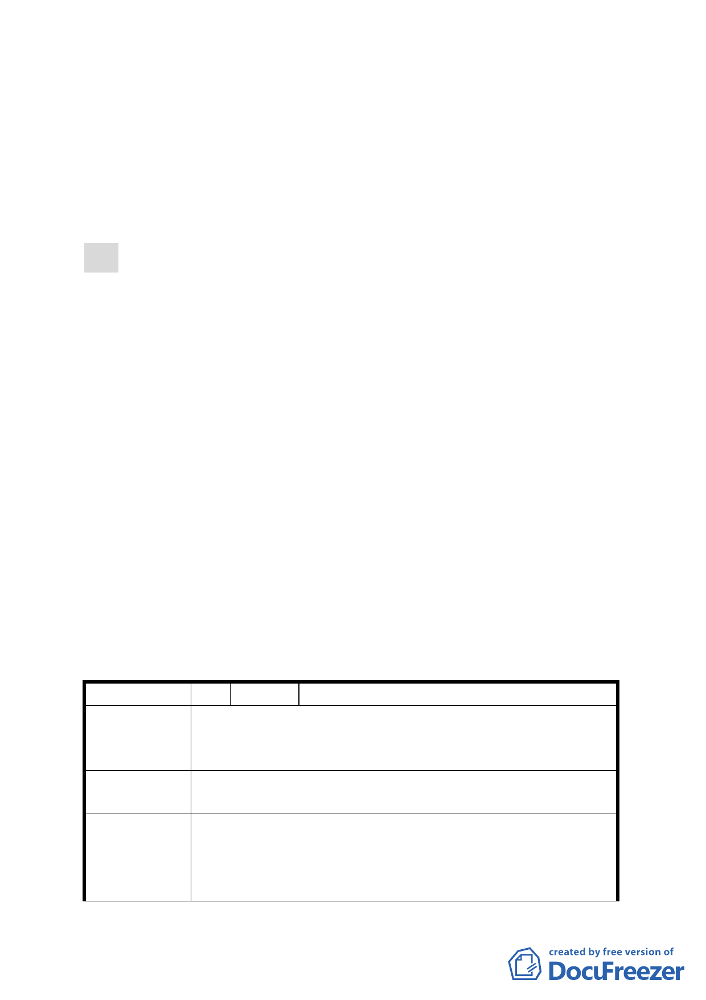

技工業區 C 區之使用規定調整』，併同公民或團體所提議意
見之回應及本次會議所提增列相關都市計畫規定等內容，
進行研議與評估後，彙整提報下次委員會議審議。』。
（三）市府現依前項會議決議，並經本會幕僚予以檢視其修正內
容後，提送補充說明資料到會續審。
七、公民或團體所提意見：共 11 件。
決議：
一、案內「基隆河（中山橋至成美橋段）計畫案（南段地區）」
街廓編號 G1-G10 之科技工業區（供倉儲使用）第三十八組
倉儲業使用之容積樓地板面積，調整為應達申請基地總容積
樓地板面積之「三分之ㄧ」以上。
二、另為利計畫後續執行與辨識，併同修改前項使用分區名稱為
「 科技工業區 D 區 」，並於其使用項目載記面積規模規定，
以玆完備。同時為考量市場機制之彈性及對土地利用之完整
性，於計畫書內加註同一街廓內各宗開發基地得採合併開發
集中留設方式予以規劃設計。
三、案內附件一表 1-1 土地及建築物使用組別容許表增列允許第
40 組「農產品批發業」第 1 目「果菜批發業」之使用。
四、餘依市府補充會議資料及簡報資料等內容，修正後通過。
五、有關公民或團體陳情意見決議情形詳如綜理表。
臺北市都市計畫委員會 公民或團體所提意見綜理表
編 號 １ 陳情人 張典儒
本重劃區公園北邊商業使用區域，計畫書中所載「本計劃
陳 情 理 由 內未規定事項，依本市土地使用分區管制規則第一種商業
區規定辦理」因適用範圍未明確，造成土地使用產生疑義。
建
議
辦
法
建請比照 86.3.5 府都二字第 01496200 號「台北市主要計
畫商業區（通盤檢討）相關疑義」之規定辦理。
一、 經查旨揭陳情地點應係指計畫書附件三內湖區新里
發展局回應
族段羊稠小段地區（內湖第五期重劃區）原都市計畫
規定（90 年 9 月 14 日公告計畫案及 93 年 4 月 22 日
公告修訂計畫案）：倉儲專業區（即本計畫辦公服務
4